A project about absence without making absence dramatic. Objects, rooms, edges, and small domestic traces do the work. The person is not necessarily missing; the image simply refuses to give them directly.
Artist note
This series is about absence disguised as presence. I was in a relationship that hollowed me out piece by piece, and the only way I could survive was to aim the camera at everything but him. Bushes, streets, strangers, traffic, shop windows—anything that wasn’t his face. The walk becomes a catalogue of detours, each frame a refusal. It looks like casual street photography, but I’m not good at street photography and I am even unsure if I even like it, however, underneath it’s self-erasure: I was there, but not really. The world got bigger, sharper, louder, while I got smaller, cut out, frame by frame.

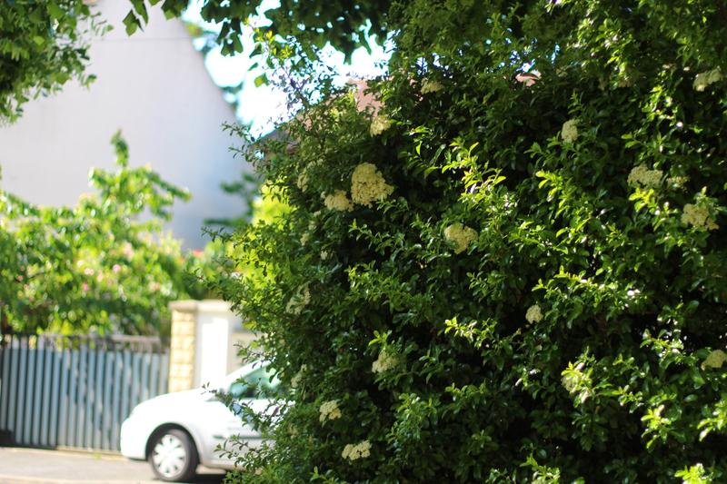
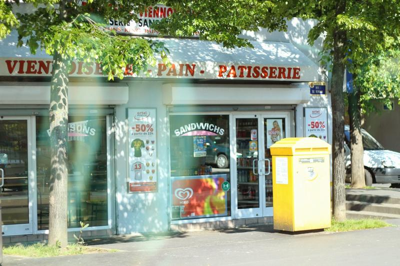
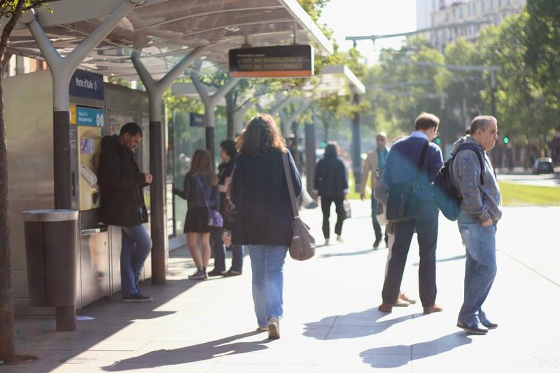
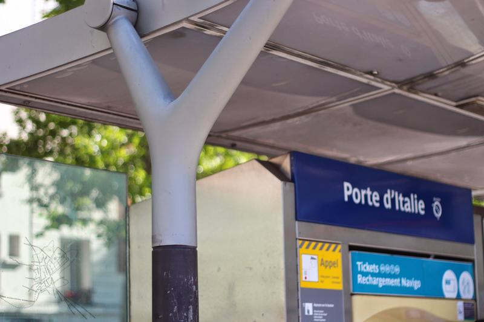
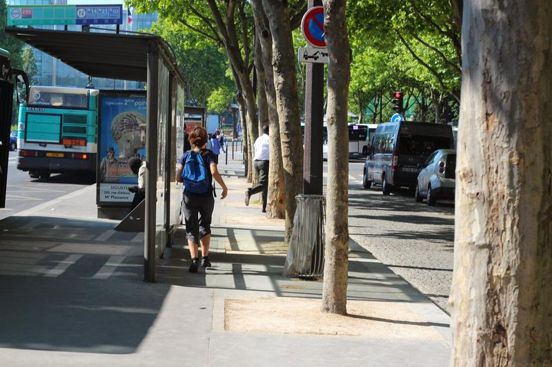
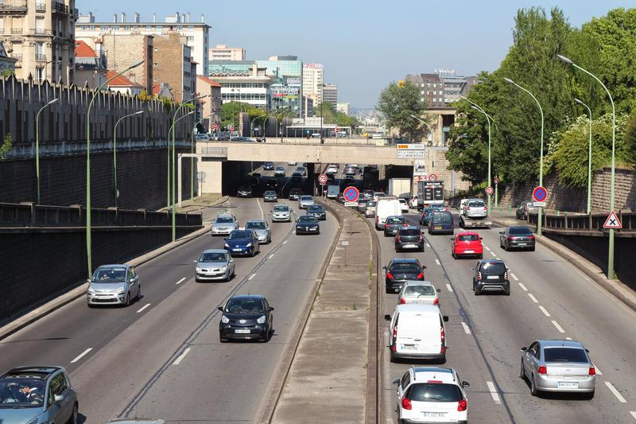
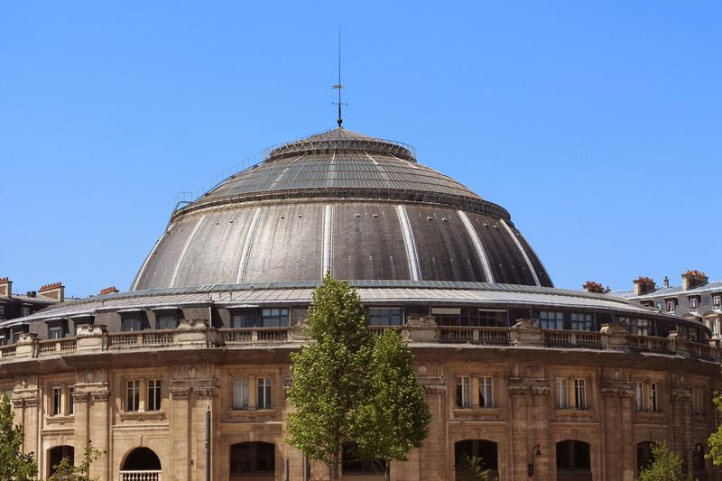
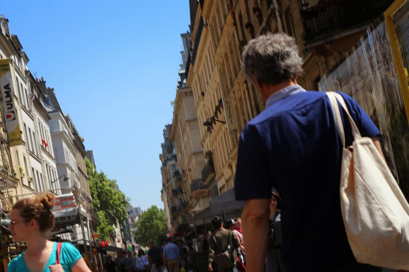
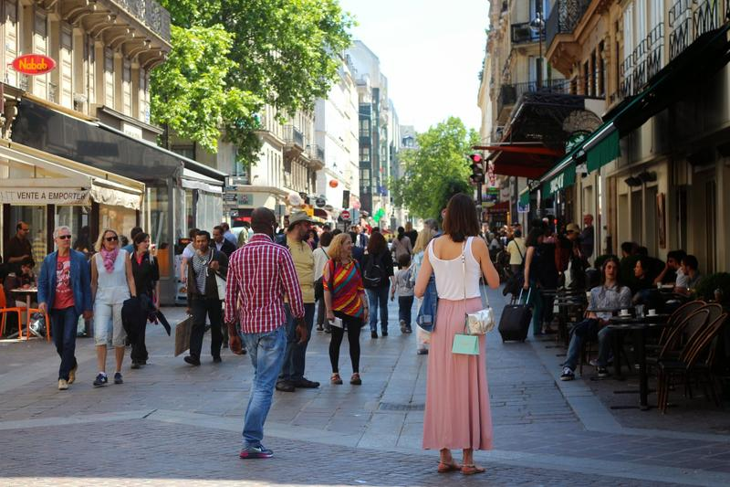
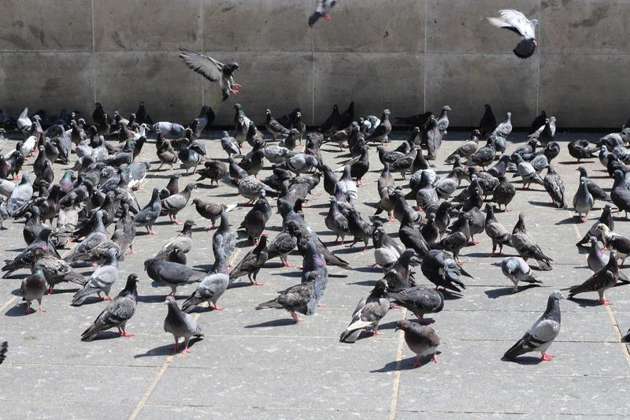
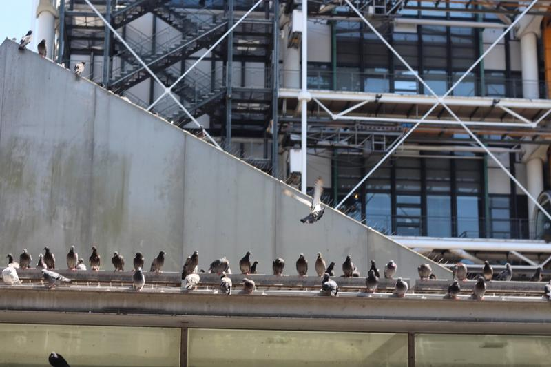